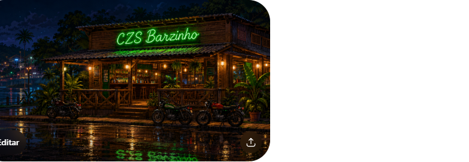
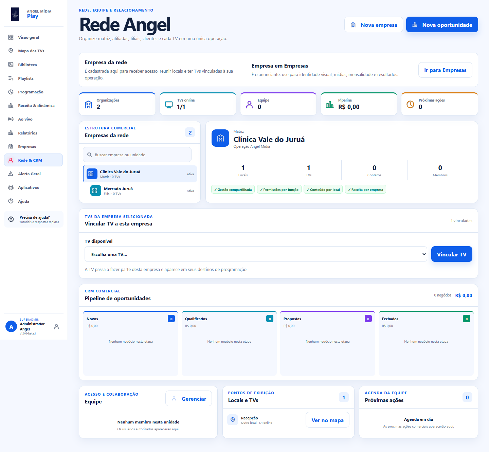
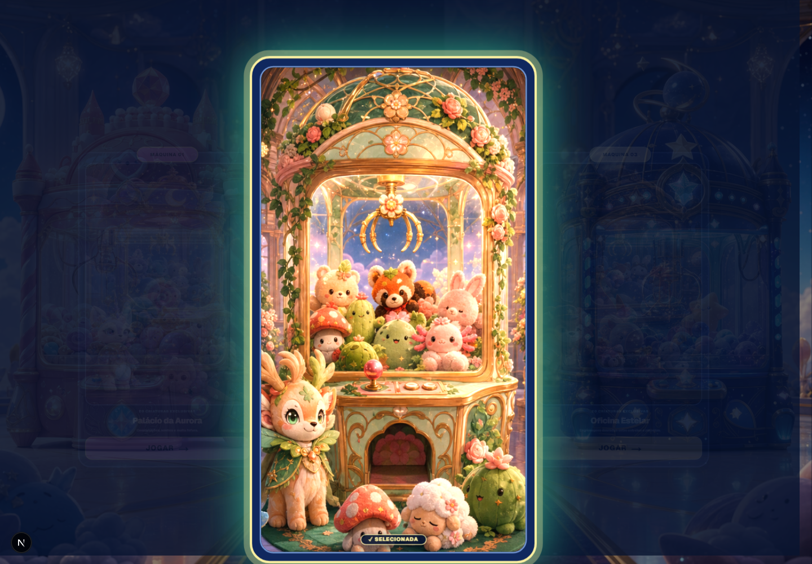
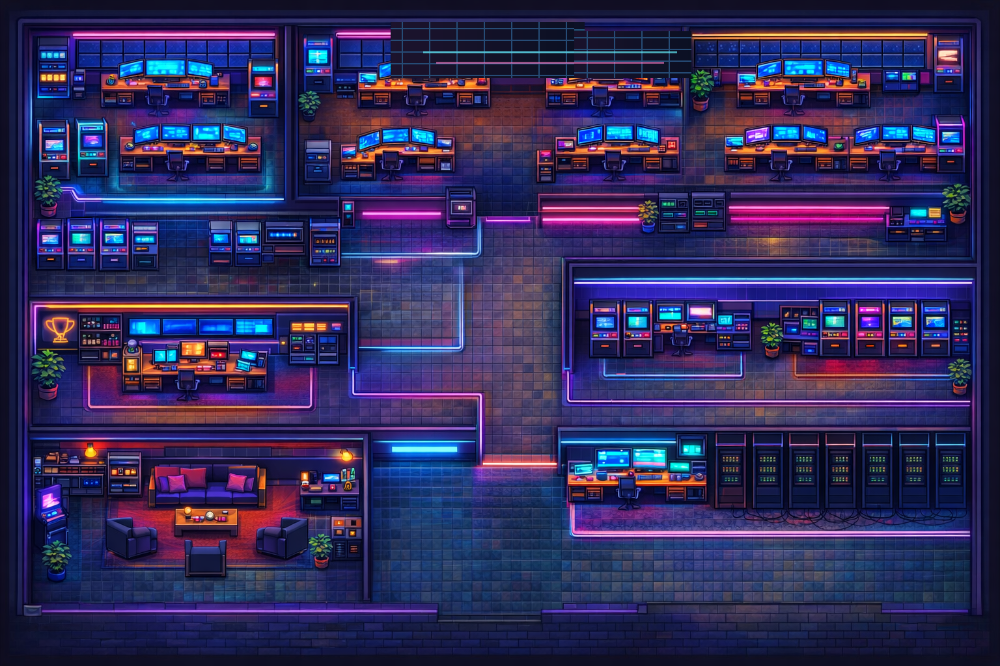
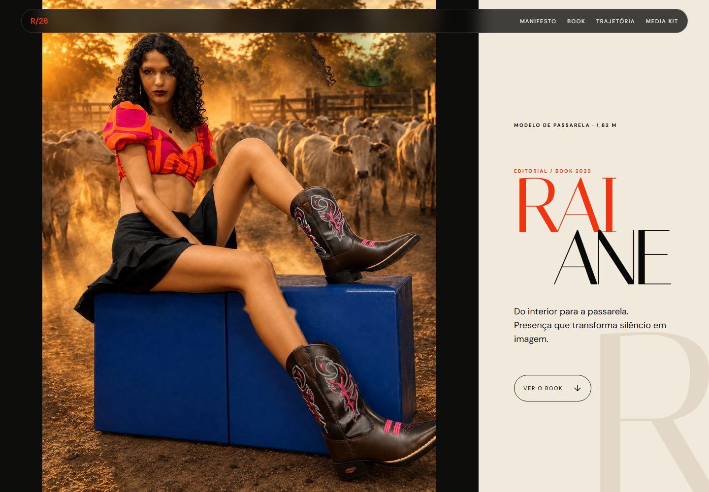

Capital no centro
Decisões e recursos chegam prontos, com pouca escuta do território.
CZS LABS / Tecnologia para o Vale do Juruá
Quando a infraestrutura digital fica concentrada nas capitais, o interior recebe ferramenta pronta, mas raramente decide a ferramenta. A CZS Labs cria sistemas, imagem e operação a partir do Vale do Juruá para que as oportunidades também nasçam aqui.
Quem vive o problema também precisa controlar a ferramenta.
TECNOLOGIA ORGANIZA INFORMAÇÃO
01INFORMAÇÃO
LOCAL
02SERVIÇOS
DIGITAIS
03COMÉRCIO E
OPERAÇÃO
04CULTURA E
CRIAÇÃO
UMA ESTRUTURA QUE PERMANECE
Tecnologia não é apenas uma ferramenta: ela organiza quem aparece, quem vende, quem informa, quem presta serviço e quem decide o que existe no território.
Por isso a CZS Labs une produto digital, comunicação, automação e presença visual para transformar conhecimento local em sistemas que funcionam no dia a dia.
03 AUTONOMIA REGIONAL
TECNOLOGIA É PODER DE DECISÃO
Quando contratos, infraestrutura, atenção e plataformas se concentram nas capitais, o interior aparece como mercado de consumo — e não como lugar que pensa, escolhe e constrói.
A CZS Labs parte desse conflito regional. Criamos produto, automação, imagem e operação com o contexto de quem vive aqui, para que informação, comércio, serviços e cultura possam nascer, circular e evoluir no Vale.
O objetivo é claro: ser uma referência que começa no Acre e conversa com o Brasil, sem repetir a dependência de soluções imaginadas de longe.
Decisões e recursos chegam prontos, com pouca escuta do território.
Quem vive o problema participa de produto, linguagem, operação e escolha.
Uma tecnologia local madura cria repertório, renda e soluções que podem ganhar escala.
04 ROTA DE CONSTRUÇÃO
DA ESCUTA À REFERÊNCIA
Não basta trazer ferramentas para o interior. É preciso reunir repertório, imagem, código, operação e gente capaz de decidir o que cada solução precisa resolver.
Mapear o que trava quem vive, trabalha e empreende no Vale.
Desenhar sistemas que respeitam a realidade local e também conseguem surpreender.
Colocar no ar, medir, ajustar e cuidar perto de quem usa todos os dias.
Fazer soluções com origem ganhar escala sem abandonar a própria origem.
PROJETOS CONSTRUÍDOS
Cada sistema resolve uma parte da autonomia: presença, ferramenta e operação para quem cria no interior. Não há produto sem contexto, nem futuro tecnológico sem gente local decidindo o que precisa existir.

Uma frente de entretenimento digital que aproxima criatividade, mecânicas e identidade visual.

Uma operação para organizar empresa, rede, telas, mídia e programação com revisão antes da ativação.

Uma experiência de loja criada para apresentar tecnologia com clareza e preparar uma operação comercial local.

Uma reconstrução de experiência de arcade com operação, ritmo visual e foco no que acontece dentro da tela.

Uma identidade pensada para existir em produto, espaço, vídeo, objetos e interfaces — não só em uma tela.

Um book que preserva a presença da pessoa e transforma as imagens em narrativa com atmosfera cinematográfica.
06 IMAGEM EM MOVIMENTO
DO BRIEFING À OPERAÇÃO
Interfaces rápidas, responsivas e organizadas para transformar a primeira visita em entendimento.
Estrutura editorial para informação regional, serviços e circulação de conteúdo com contexto.
Fluxos entre empresa, rede, TVs, mídia, playlist, revisão e ativação de programação.
Produtos apresentados com identidade, dados organizados e caminhos para uma venda mais clara.
Peças, vídeos e experiências visuais que fazem tecnologia parecer parte da cultura, não um recurso distante.
Prototipagem que mistura design, regras, arte e narrativa para abrir novas frentes digitais.
08 ATLAS TECNOLÓGICO
As ferramentas mudam. O compromisso é usar código, imagem, dados e operação para fazer o Acre e o Brasil reconhecerem uma tecnologia com origem no Vale.
DO VALE DO JURUÁ PARA O MUNDO
Construir aqui é escolher que informação, comércio, serviço e cultura não precisem depender sempre de outras cidades.
VOLTAR AO INÍCIO ↑